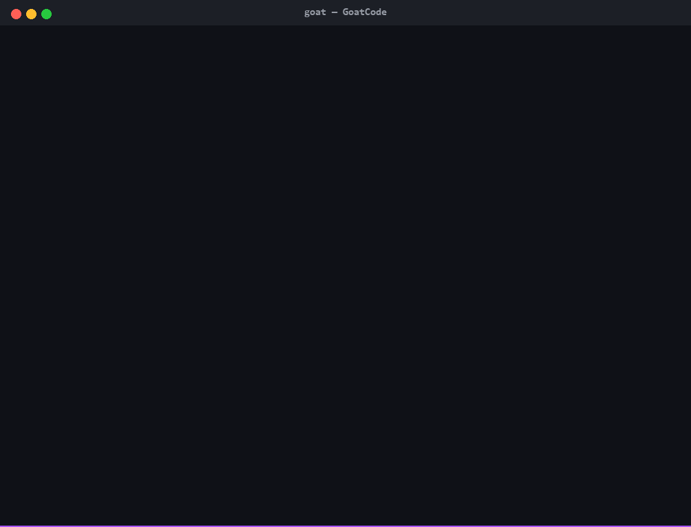
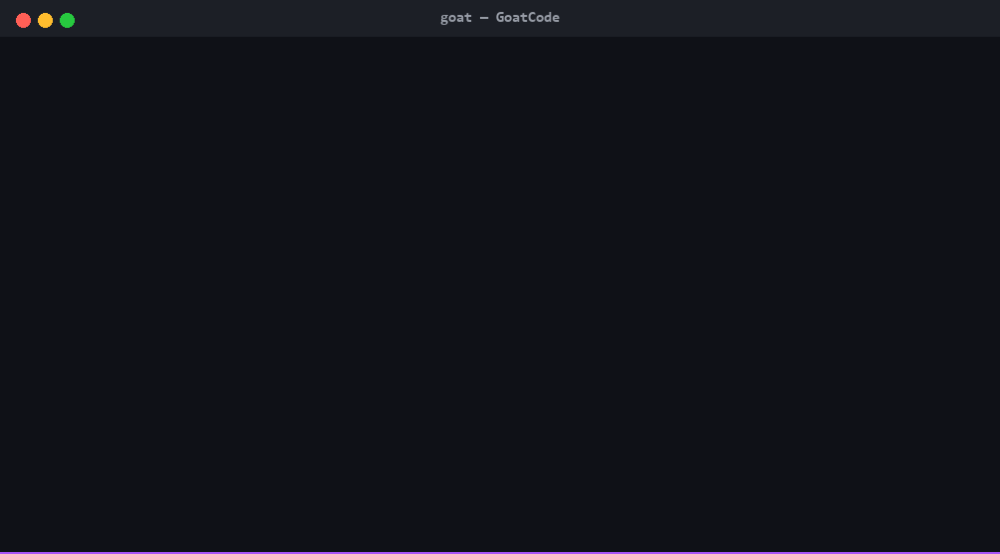
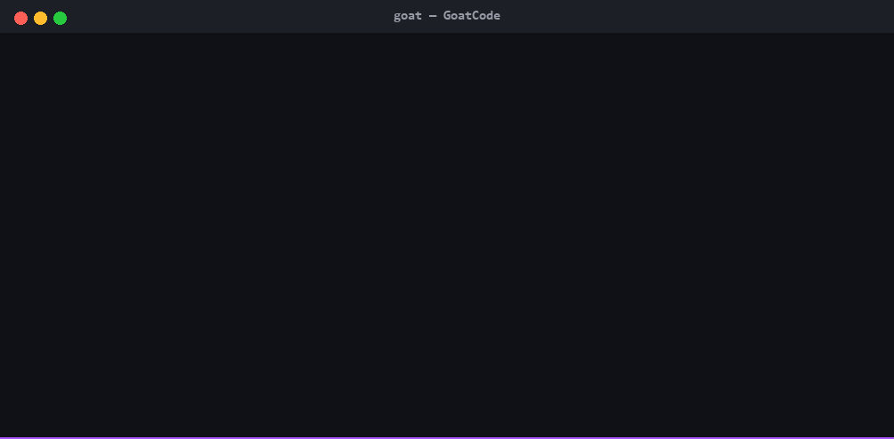
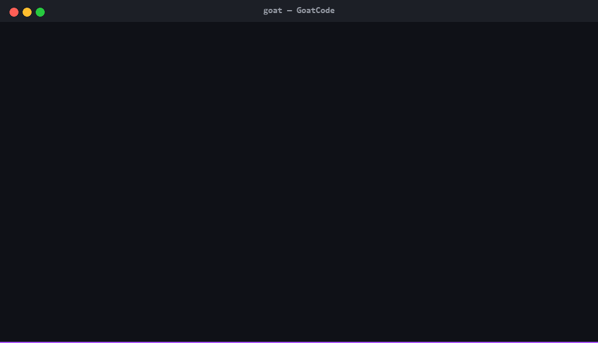
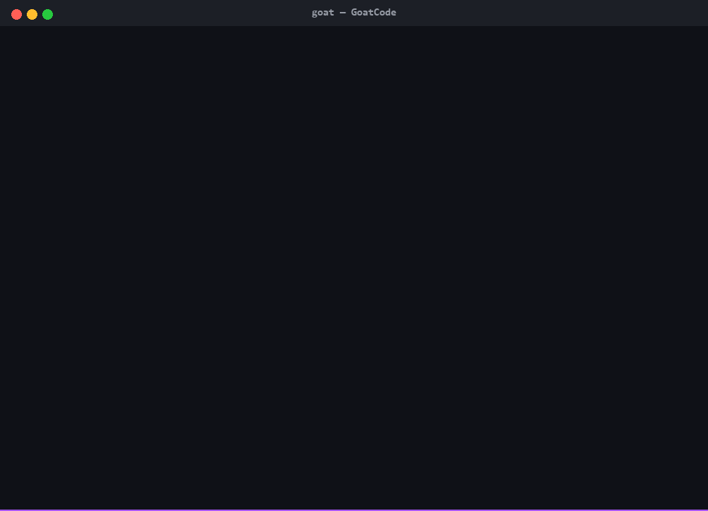
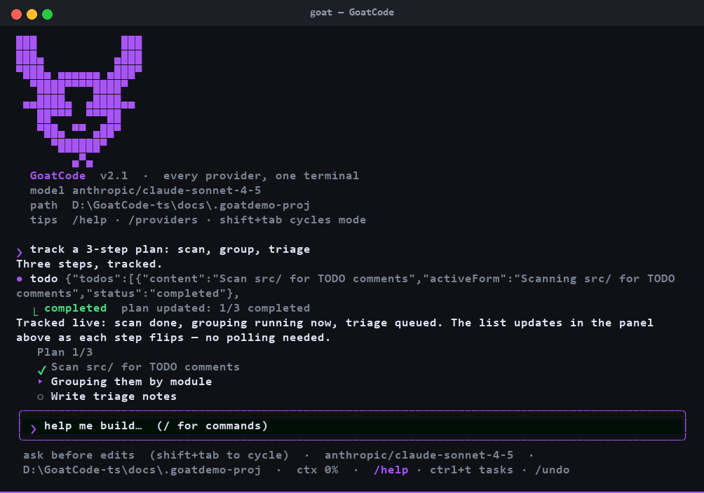

v3.3.0 — crash recovery · session branching · doctor diagnostics
The autonomous multi-repo AI coding agent for your terminal. Boots free with zero config — or bring 180+ providers and the Claude/ChatGPT/Gemini subscriptions you already pay for. One 85 MB binary. No accounts. No lock-in. With crash recovery, session branching, and an 8-point health check.
Speaks to all of them, natively:
What's new in v3
A major architectural leap: sub-second code intelligence and team collaboration without leaving the terminal.
Mount several repos at once — cross-repo search, per-repo sandboxes, strict permission rules. workspace.repos does it.
Zero-config tree-sitter parser (TS · JS · Python · Go) with WASM fallback. Incremental mtime+size fast path, atomic persistence, TF-IDF ranked symbol lookup.
/index → /find <symbol>End-to-end-encrypted WebSocket relay — Lamport timestamp sequencing, invite codes, turn-tokens, live peer sync. Share your session with a teammate.
/share · /peers · /handoffJSON-RPC 2.0 over HTTP and WebSocket. Constant-time token auth, path-jailed execution, remote agent mounting — mount a teammate's agent as remote_<name>.
Browse and install community plugins verified with ed25519 signatures against pinned keys — secure tar extractor with path-traversal and bomb guards.
/marketplaceRecrafted terminal UI — true-black #000F08 input, deep #25262D panels, violet accents. Every GIF on this page runs in it.
No API key yet? GoatCode auto-boots an embedded free inference engine on loopback — full AI coding out of the box, zero setup, $0. /model flash anytime.
Fork conversations with /fork — create child sessions that share history up to the branch point. Track all branches in the parent session's metadata.
Append-only session persistence with crash recovery markers. Resume interrupted sessions via /recover — replay pending tool calls and never lose progress.
Run /doctor for a comprehensive 8-point system health check covering providers, configs, credentials, and network connectivity.





pty-captured recordings of the real TUI — real renderer, real agent loop, never a mock-up.
Mid-turn failover
GoatCode retries the provider, walks your fallback chain live — switches, says so, and finishes the answer. No crash, no lost context.
The switch is sticky: the next launch starts on the provider that worked.
goat config set fallback-models \ '["openrouter/claude-sonnet","groq/llama-3.3-70b", "deepseek/deepseek-chat"]'
Background work gets its own budget too: set small_model and compaction + explore-subagents route to the cheap model while your main turn stays on the frontier one.
Why GoatCode
Your terminal, your keys, your existing plans. Not a comparison chart trick — every cell is a feature you can test in sixty seconds.
| ▄███▄ GoatCode v3 | Claude Code | Codex CLI | OpenCode | |
|---|---|---|---|---|
| Cost to start | $0, MIT + free built-in model | proprietary | proprietary | MIT |
| Providers | 180+ + any compatible endpoint | Anthropic only | OpenAI only | multi |
| Use your existing subscriptions | ✓ OAuth → credentials | only Anthropic's | only OpenAI's | partial |
| Multi-repo workspace | ✓ native roots map | single | single | single |
| Code intelligence | ✓ tree-sitter + WASM + rank | basic grep | basic grep | basic grep |
| Collab & relay | ✓ E2E · Lamport sync · invites | — | — | — |
| Agent-as-a-Service | ✓ JSON-RPC 2.0 + remote tools | — | — | — |
| Signed plugins | ✓ ed25519 + bomb guards | — | — | — |
| Config UI | ✓ repos · providers · models · permissions · flash · hooks · skills · plugins | — | — | — |
| Failover when quota dies | ✓ built-in, mid-turn | — | — | manual |
| Desktop control (click/type/launch) | ✓ built-in | — | — | — |
| MCP / skills / plugins | ✓ ✓ ✓ | ✓ · plugins ✗ | — | ✓ |
| Single static binary | ✓ Bun-compiled, 5 platforms | Node | Node | various |
| Prompt caching + live cost in USD | ✓ automatic, /cost | silent | — | varies |
| /rewind — transcript + files restored | ✓ | ✓ | — | — |
| Session search across all history | ✓ /search | — | — | — |
Features differ by vendor version — spot-check anytime: goat --help lists everything.
Log in, don't sign up
Browser / device OAuth — one command each. No new accounts, no extra invoices.
goat auth claude --oauthgoat auth codex --oauthgoat auth gemini --oauthgoat auth kimi --oauthgoat auth grok --oauthgoat auth github-copilot --oauthAPI-key providers too — OpenAI, DeepSeek, Groq, Mistral, Together, Fireworks, xAI, OpenRouter, Moonshot, Cerebras, Ollama, LM Studio, llama.cpp… set the usual env var or goat auth <id> --key. Any endpoint speaking OpenAI / Anthropic / Gemini wire formats slots in with goat addp. Check what resolves: goat providers --check.
Computer use
The computer tool clicks, types, scrolls, launches apps, and reads what's on screen — vision included, screenshots go straight into the model.
Permission-gated by default: every destructive action asks — or plan/bypass modes decide per-session.
And reads are parallelized — a five-file exploration costs one round-trip, not five.

Extensible
Add any stdio / http / sse server — their tools land beside the built-ins.
goat mcp add context7 npx -y @upstash/context7-mcpDrop a folder into ~/.goatcode/skills/. Progressive disclosure keeps context lean. /skills lists everything loaded.
One config line points at a directory of commands + skills. /plugin reload picks up edits live.
Claude-Code-compatible PreToolUse / PostToolUse / Stop shell hooks. Guardrails as code, not vibes.
Project memory loaded into every session. /init drafts it from a real read of your codebase — commands, architecture, gotchas with file:line examples.
goat self-update swaps the running binary for the latest release atomically. The TUI hints the moment a release lands.
Toolbox
System prompt + tools cached between turns — repeated context bills at 10% of input price. Savings shown live in /cost.
Every edit prints its colored diff the moment it lands. /rewind 4 restores transcript and files to turn 4.
Bypass permissions that actually bypasses — every tool auto-approves, mid-turn, no prompts.
Decomposes a goal into parallel scout subagents, then merges one prioritized plan — dispatched in a single command.
Full-text search across every saved session.
@file completion and /model sonnet shortcuts.
Slash commands
shift+tab cycles ask → accept-edits → plan → 🐐 GOAT MODE (--bypass) — zero prompts, instant execution · ctrl+t task panel · ctrl+v attach image · esc interrupt
CI & scripts
Print mode reads stdin, writes JSON, and its sessions stay resumable — goat -c picks up where CI left off.
Unknown models show honest zeros and a no price known note instead of a made-up number.
$ cat error.log | goat -p "why did this fail?" --output-format json { "type": "result", "is_error": false, "session_id": "…", "model": "…", "usage": { input_tokens: 512, output_tokens: 42 }, "cost_usd": 0.002166 } $ goat /usage all all time · 41 sessions · 1,284,113 in / 204,992 out · $4.31
Quick start
Or zero-install: npx goatcode-cli. Any OS with Node ≥16 — fetches the right binary.
No key? It boots Goated-Flash-Free — an embedded model, zero setup, $0. Add a provider whenever you want.
Turn your subscription into credentials — or paste a key, /model flash flips back to free anytime.
windows powershell -c "irm …/install.ps1 | iex"
unix curl -fsSL …/install.sh | bashFAQ
goat auth claude --oauth → browser login → credentials, done. Same for ChatGPT, Gemini, Kimi, Grok, and Copilot.irm | iex install, native computer-use, ConPTY-tested TUI. CI runs on ubuntu, windows and macos on every push.If GoatCode saved your quota an evening, a ★ is the cheapest thank-you.